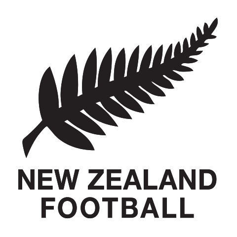
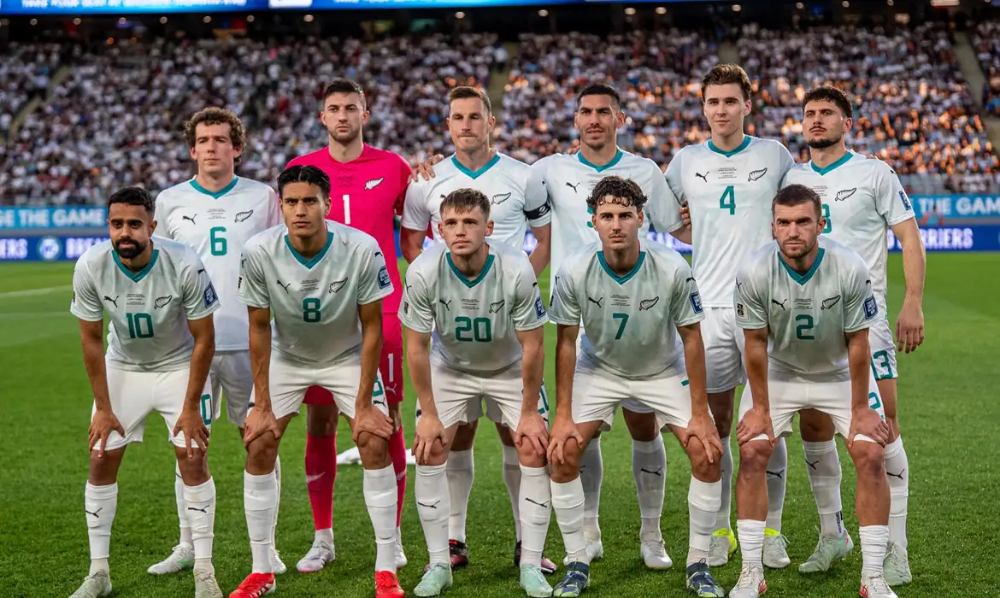

Nova Zelândia
Nova Zelândia
2
Participações
(1982-2010)

Oceania
A seleção neozelandesa de futebol, conhecida como os "All Whites", representa a Nova Zelândia nas competições internacionais. O país é mais conhecido pelo rugby, mas o futebol vem crescendo rapidamente. A Nova Zelândia participou de duas Copas do Mundo — em 1982 na Espanha e em 2010 na África do Sul — e na edição de 2010 surpreendeu ao terminar a fase de grupos sem nenhuma derrota, somando três empates. O país disputa as eliminatórias pela OFC (Confederação de Futebol da Oceania).

Goleiros:
Defensores:
Meio-campistas:
Atacantes:
Participações
(1982-2010)
Títulos
Melhor campanha
Primeira
participação
| Ano | Sede | Resultado |
|---|---|---|
| 1982 |
|
Fase de Grupos |
| 2010 |
|
Fase de Grupos |
| Participações | 2 |
| Títulos | 0 |
| Vice-campeonatos | 0 |
| 3º Lugar | 0 |
| 4º Lugar | 0 |
| Melhor campanha | Fase de Grupos (2010) |
| Jogos disputados | 7 |
| Vitórias | 0 |
| empates | 3 |
| Derrotas | 4 |

calendar_monthJunho - Julho de 2026
location_onMéxico, Estados Unidos e Canadá